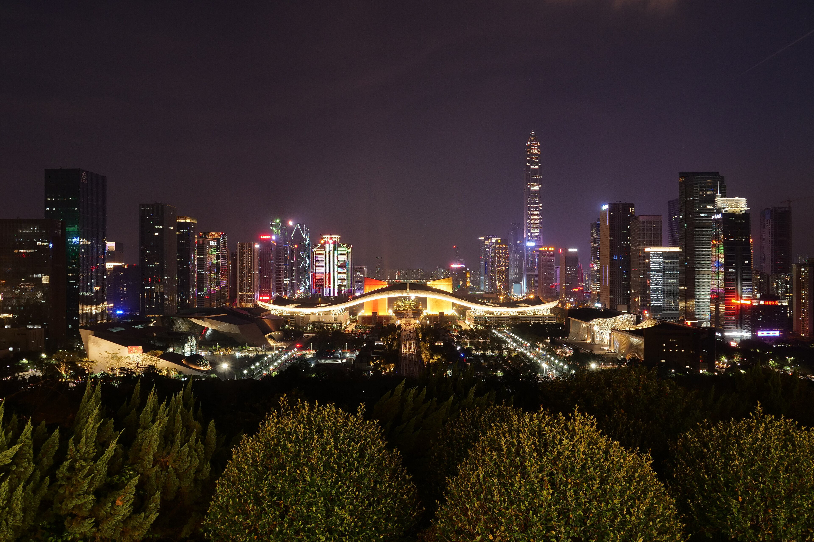

SPECIAL EPISODE — FOR YOUR NEXT CHAPTER
第貳拾年
獻給 親愛的你A NEW CHAPTER. A NEW YOU.
SHENZHEN / 22°32′N 114°03′EEPISODE 20 / ∞
CONNECTING YOUR NEXT CHAPTER
正在收集深圳的萬家燈火。

獻給 親愛的你SHENZHEN / SPECIAL EPISODE
第貳拾年
借深圳的萬家燈火，
祝你自由、熱烈、閃閃發光。
點擊夜空，讓一束煙花為你升起。